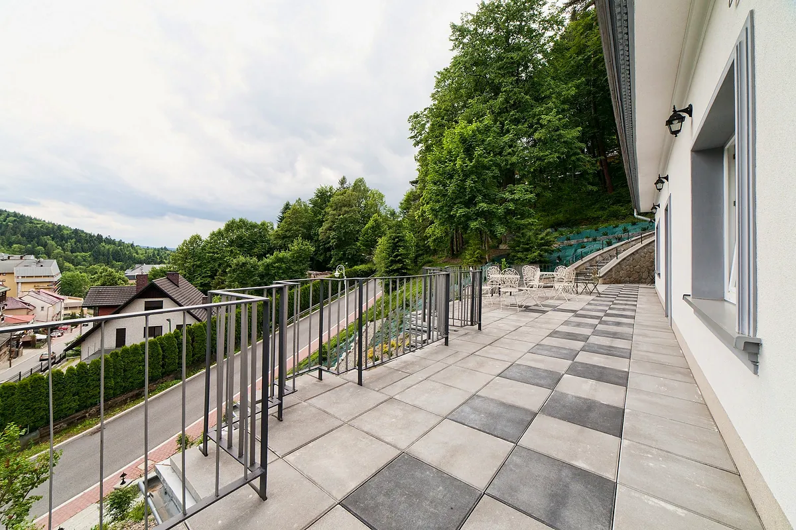

Wczasy i weekendy
Kilka dni ciszy przy lesie i spacerem do deptaka. Na tarasie kawa z widokiem, rano śniadanie w formie bufetu, wieczorem ciepła obiadokolacja. W ferie, wakacje i święta przygotowujemy specjalne oferty pobytowe.
Pakiet dla narciarzy
5 noclegów i 5 śniadań, Wi-Fi, TV, monitorowany parking i grota solna. Obiadokolacje za dopłatą 50 zł, sauna 35 zł. Oferta obowiązywała w sezonie 2025, od 1 lutego do końca pokrywy śnieżnej.
900 złosoba dorosła, 800 zł dzieci do 12 lat